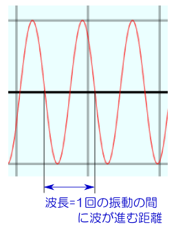
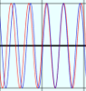
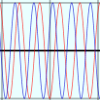

これは、「位相速度」と「群速度」を理解するためのアニメーションである。図でわかってもらうためのものなので、数学的な説明については少しだけなので、詳細は教科書等を参照すること。
まず１つの波
y1=A sin( kx -ωt )
の進行を見てみよう。
波数kと角振動数ωを変化させて、波がどう変わるかを見てみよう。波数が大きいとはどういうことか（小さいとはどういうことか）、ωが変わるとどう変わるのか、をわかって欲しい。
kが大きいと波がつまる（山と山、谷と谷の間隔が狭くなる）。kの意味は「2πメートルという長さの中に何個の波が入っているか」と考えてもよい。k=1ならば長さ2πの中に一個の波が入っている（「波数」という名前だから「波の数」なのだが、単位長さではなく2πメートルの中の数であることに注意）。
一方、同様に表現すればωの意味は「2π秒という時間の中に何個の波が入っているか」である。ωが大きいと、その場所における振動が速くなる。
波の速度（ここでの速度は「位相速度」の方）は（波数／角振動数）で計算できるので、波１の速度は(ω/k)である。
波の速度が（kが一定ならば）ωに比例するのは、ωが大きければ「ある一点における振動」が速いのだから、波が進む速度も速くなるだろう、と考えれば実感できる。
波の速度は（ωが一定ならば）kに反比例する。kが大きい（つまり波がつまる＝波長が短い）と遅くなる。これは1回の振動の間に一波長だけ波が進行する（下の図を参照）ということを考えると実感できる

kが大きいと波がつまり（波長が短くなり）、一回の振動の間に波が進む距離が小さくなるので、速度が遅くなる、ということである。
kとωをいろいろ変化させながら並の速度の変化を感じ取ろう。
では次に、二つの波を重ねてみよう。波１に、波数がΔk大きく、角振動数がΔωだけ大きい、もう一つの波
y2=A sin( (k+Δk)x - (ω+Δw)t )
を重ねて表示したのが次のグラフである。
上のグラフには、波１と波２の両方が表示された。二つの波はΔkだけ波数が違うので、ある場所ではのように山と山（谷と谷）が重なり、強め合うが、ある場所ではのように山と谷が重なり、消し合う。重なりのずれていく様子を観察しよう。ずれ方はΔkを変化させると変わるので、それを見てみよう。
Δkが小さいと波の長さの差が小さいので、強め合うところから消し合うところまでの距離が長くなる（逆にΔkが大きいと強め合う場所と消し合う場所が近くなる）。Δωが小さいと波の振動の差も小さいので、強め合った状態から消し合う状態に変化するまでの時間が長くなる。
では実際に波がどのように強め合っているのかは、次のページで見よう。
合成波、すなわち波１と波２を足した波も表示して、合成波の「こぶ」（波が強め合っている部分）が動く様子を見よう。
以下は二つの波、
y1=A sin( kx -ωt )
と
y2=A sin( (k+Δk)x - (ω+Δw)t )
およびその二つの合成波の様子を表したグラフである。
ΔωやΔkを変化させてこぶの変化の様子を見よう。「こぶ」の動く速さは、波１の速さとも波２の速さとも違う。式で書くなら(Δω/Δk)になっている。これが群速度である。
群速度というのは波が「強め合う場所（消し合う場所でもよいが）」の移動の速度（あるいは「こぶの速度」）である。位相速度は「波の山（谷でもよいが）」の移動速度であり、この二つは違う。
違う理由を図で説明しよう。このプログラムでは（Δkは0以上なので）波１より波２の方が波数が大きい（ということは、波長が短い）。どちらの速度が速いかは、ΔkとΔωの大きさにより違う。
今、波１の位相速度の方が速かったとしよう。すると、後ろにいる波１の山が前にいる波２の山に追いつく。という現象が起きる。
このため、「次に強め合う場所」は「今強め合っている場所」よりも後ろになる。結果、強め合う場所の移動速度（群速度）は、山の速度（位相速度）より遅くなる。「山の速度＞こぶの速度」である。
一方、波２の位相速度の方が速かったとしよう。すると、前にいる波１の山に、後ろにいる波２の山が追いつく。という現象が起きる。
このため、「次に強め合う場所」は「今強め合っている場所」よりも前になる。結果、強め合う場所の移動速度（群速度）は、山の速度（位相速度）より速くなる。「山の速度＜こぶの速度」である。
静止画の説明だけではわかりにくい人は、上のアニメーションで二つの波の位相速度を調節して、この説明の通りの現象が起きていることを納得しよう。
ここまでの動きをみていて、こんなことを感じたかもしれない。
これを数式で表現しておこう。合成波は
A sin( kx - t ) + A sin( (k+Δk)x - (ω + Δω)t )
であるが、三角関数の公式
| sin α + sin β = 2sin | α+β 2 | cos | α-β 2 |
を使うと、合成波の式は
| 2A sin | (2k+Δk)x-(2ω+Δω)t 2 | cos | Δk x-Δω t 2 |
となる。これが掛算で表現された式である。次の図では、
とsin (2k+Δk)x-(2ω+Δω)t
2←これは二つの波の「平均」の波数と角振動数を持つ波。
も表示した（たくさんのグラフが重なって見にくい、という人はBOXをクリックして表示をON/OFFしよう）。2cos Δk x - Δω t
2←これは「こぶ」のでき方を表す。
↑にあるスライダーで、k,ω,Δk,Δωの大きさを変化させることができる。
「波１を表示」「波２を表示」…などのBOXをクリックすることで表示を切り替えられる（最初は全て表示）。↑
他に、以下の様なことは試してみただろうか？
位相速度と群速度が同じになってしまうのはどんな時？？（どういう現象が起きてる？？）
Δk=0にしたらどうなる？？（群速度はどうなる？そしてそれはどういう現象？？）
Δω=0にしたらどうなる？？（群速度はどうなる？そしてそれはどういう現象？？）
まだの人はやってみよう。